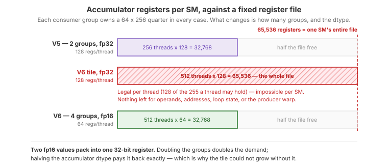

6. Four Consumers, FP16 Accumulation, and a TMA Epilogue¶
V5 keeps the tensor cores busy inside each consumer group, but two
costs remain fixed per output tile: the pipeline prologue and drain, and the
epilogue. With a 128 x 256 tile there is only so much compute to amortize
them over. The obvious response — make the tile bigger — runs into the
constraint that has shaped every version so far: the accumulator lives in
registers.
This version breaks that deadlock with three changes that only work together:
Four consumer warp groups on a
256 x 256tile, so each group owns a64 x 256quarter and four independent WGMMA streams are in flight.Native fp16 WGMMA accumulation, halving accumulator register cost so the larger tile fits at all.
A shared-memory TMA epilogue, where the four groups take turns staging their quarter through one shared buffer for a bulk TMA store.
Together with an 8-wide raster group, this is the version that passes cuBLAS.
The Full Kernel¶
class Pipeline(tilus.Class):
def __init__(
self,
num_stages: int,
producer_arrive_count: int = 1,
consumer_arrive_count: int = 1,
):
self.num_stages: int = num_stages
self.empty_barriers = self.mbarrier.alloc(
[consumer_arrive_count for _ in range(num_stages)]
)
self.full_barriers = self.mbarrier.alloc(
[producer_arrive_count for _ in range(num_stages)]
)
self.producer_stage: int32 = 0
self.consumer_stage: int32 = 0
self.producer_phase: uint32 = self.mbarrier.producer_initial_phase
self.consumer_phase: uint32 = self.mbarrier.consumer_initial_phase
def producer_acquire(self):
self.mbarrier.wait(
barrier=self.empty_barriers[self.producer_stage],
phase=self.producer_phase,
sem="relaxed",
scope="cta",
)
def producer_barrier(self) -> RegisterTensor:
return self.full_barriers[self.producer_stage]
def producer_advance(self):
self.producer_stage = (self.producer_stage + 1) % self.num_stages
self.producer_phase = self.producer_phase ^ (self.producer_stage == 0)
def consumer_acquire(self):
self.mbarrier.wait(
barrier=self.full_barriers[self.consumer_stage],
phase=self.consumer_phase,
sem="relaxed",
scope="cta",
)
def consumer_barrier(self) -> RegisterTensor:
return self.empty_barriers[self.consumer_stage]
def consumer_advance(self):
self.consumer_stage = (self.consumer_stage + 1) % self.num_stages
self.consumer_phase = self.consumer_phase ^ (self.consumer_stage == 0)
def prev_consumer_barrier(self) -> RegisterTensor:
prev_stage = (self.consumer_stage + (self.num_stages - 1)) % self.num_stages
return self.empty_barriers[prev_stage]
@tilus.autotune("num_stages", [3])
@tilus.autotune("block_m, block_n", [[256, 256]])
@tilus.autotune("block_k", [64])
@tilus.autotune("swizzle_size", [8])
class MatmulWGMMAV6(tilus.Script):
def __init__(self, num_stages, block_m, block_n, block_k, swizzle_size):
super().__init__()
self.num_stages = num_stages
self.block_m = block_m
self.block_n = block_n
self.block_k = block_k
self.swizzle_size = swizzle_size
def compute_block_coord(
self, linear_idx: int32, num_m_blocks: int32, num_n_blocks: int
):
swizzle_size = self.swizzle_size
tiles_per_group = num_m_blocks * swizzle_size
group_idx, in_group_idx = self.fast_divmod(linear_idx, tiles_per_group)
first_n = group_idx * swizzle_size
m_block: int32 = 0
n_block: int32 = 0
remainder = num_n_blocks - num_n_blocks // swizzle_size * swizzle_size
last_group_width = remainder if remainder > 0 else swizzle_size
if first_n + swizzle_size <= num_n_blocks:
m_block, r = self.fast_divmod(in_group_idx, swizzle_size)
n_block = first_n + r
else:
m_block, r = self.fast_divmod(in_group_idx, last_group_width)
n_block = first_n + r
return m_block, n_block
def consume_tile(
self,
sa: SharedTensor,
sb: SharedTensor,
sc: SharedTensor,
tma_pipe: Pipeline,
epilogue_ready: RegisterTensor,
epilogue_free: RegisterTensor,
consumer_idx: int,
k_size: int,
):
block_m_slice = self.block_m // 4
acc = self.register_tensor(
dtype=float16, shape=[block_m_slice, self.block_n], init=0.0
)
tma_pipe.consumer_acquire()
self.wgmma.fence()
self.wgmma.mma(
sa[tma_pipe.consumer_stage, consumer_idx],
sb[tma_pipe.consumer_stage].transpose(),
acc,
)
self.wgmma.commit_group()
tma_pipe.consumer_advance()
for offset_k in self.range(
self.block_k, k_size, self.block_k, unroll=self.num_stages
):
tma_pipe.consumer_acquire()
self.wgmma.fence()
self.wgmma.mma(
sa[tma_pipe.consumer_stage, consumer_idx],
sb[tma_pipe.consumer_stage].transpose(),
acc,
)
self.wgmma.commit_group()
self.wgmma.wait_group(1)
with self.single_thread():
self.mbarrier.arrive(tma_pipe.prev_consumer_barrier())
tma_pipe.consumer_advance()
self.wgmma.wait_group(0)
with self.single_thread():
self.mbarrier.arrive(tma_pipe.prev_consumer_barrier())
if consumer_idx > 0:
self.mbarrier.wait(epilogue_free[consumer_idx - 1], phase=0)
self.store_shared(sc, self.cast(acc, dtype=float16))
self.mbarrier.arrive(epilogue_ready[consumer_idx])
def store_epilogue(
self,
sc: SharedTensor,
gc: GlobalTensor,
epilogue_ready: RegisterTensor,
epilogue_free: RegisterTensor,
consumer_idx: int,
offset_m: int32,
offset_n: int32,
):
self.mbarrier.wait(epilogue_ready[consumer_idx], phase=0)
self.fence.proxy_async(space="shared")
self.tma.shared_to_global(
sc,
gc,
offsets=[offset_m + consumer_idx * (self.block_m // 4), offset_n],
)
self.tma.commit_group()
self.tma.wait_group(n=0, read=True)
if consumer_idx < 3:
with self.single_thread():
self.mbarrier.arrive(epilogue_free[consumer_idx])
def __call__(
self,
m_size: int32,
n_size: int,
k_size: int,
a_ptr: ~float16,
b_ptr: ~float16,
c_ptr: ~float16,
):
num_stages = self.num_stages
block_m, block_n, block_k = self.block_m, self.block_n, self.block_k
block_m_slice = block_m // 4
num_m_blocks = cdiv(m_size, block_m)
num_n_blocks = cdiv(n_size, block_n)
self.attrs.blocks = num_m_blocks * num_n_blocks
self.attrs.warps = 17
m_block, n_block = self.compute_block_coord(
self.blockIdx.x, num_m_blocks, num_n_blocks
)
offset_m: int32 = m_block * block_m
offset_n: int32 = n_block * block_n
ga = self.global_view(a_ptr, dtype=float16, shape=[m_size, k_size])
gb = self.global_view(b_ptr, dtype=float16, shape=[n_size, k_size])
gc = self.global_view(c_ptr, dtype=float16, shape=[m_size, n_size])
sa = self.shared_tensor(
dtype=float16, shape=[num_stages, 4, block_m_slice, block_k]
)
sb = self.shared_tensor(dtype=float16, shape=[num_stages, block_n, block_k])
sc = self.shared_tensor(dtype=float16, shape=[block_m_slice, block_n])
tma_pipe = Pipeline(num_stages, producer_arrive_count=1, consumer_arrive_count=4)
epilogue_ready = self.mbarrier.alloc([128, 128, 128, 128])
epilogue_free = self.mbarrier.alloc([1, 1, 1])
with self.thread_group(thread_begin=512, num_threads=32):
for offset_k in self.range(0, k_size, block_k, unroll=num_stages):
tma_pipe.producer_acquire()
with self.single_thread():
self.mbarrier.arrive_and_expect_tx(
tma_pipe.producer_barrier(),
transaction_bytes=sa[tma_pipe.producer_stage, 0].nbytes
+ sa[tma_pipe.producer_stage, 1].nbytes
+ sa[tma_pipe.producer_stage, 2].nbytes
+ sa[tma_pipe.producer_stage, 3].nbytes
+ sb[tma_pipe.producer_stage].nbytes,
)
self.tma.global_to_shared(
src=ga,
dst=sa[tma_pipe.producer_stage, 0],
offsets=[offset_m, offset_k],
mbarrier=tma_pipe.producer_barrier(),
)
self.tma.global_to_shared(
src=ga,
dst=sa[tma_pipe.producer_stage, 2],
offsets=[offset_m + 2 * block_m_slice, offset_k],
mbarrier=tma_pipe.producer_barrier(),
)
self.tma.global_to_shared(
src=ga,
dst=sa[tma_pipe.producer_stage, 3],
offsets=[offset_m + 3 * block_m_slice, offset_k],
mbarrier=tma_pipe.producer_barrier(),
)
self.tma.global_to_shared(
src=ga,
dst=sa[tma_pipe.producer_stage, 1],
offsets=[offset_m + block_m_slice, offset_k],
mbarrier=tma_pipe.producer_barrier(),
)
self.tma.global_to_shared(
src=gb,
dst=sb[tma_pipe.producer_stage],
offsets=[offset_n, offset_k],
mbarrier=tma_pipe.producer_barrier(),
)
tma_pipe.producer_advance()
for _ in self.range(min(num_stages, cdiv(k_size, block_k))):
tma_pipe.producer_acquire()
tma_pipe.producer_advance()
self.store_epilogue(
sc, gc, epilogue_ready, epilogue_free, 0, offset_m, offset_n
)
self.store_epilogue(
sc, gc, epilogue_ready, epilogue_free, 1, offset_m, offset_n
)
self.store_epilogue(
sc, gc, epilogue_ready, epilogue_free, 2, offset_m, offset_n
)
self.store_epilogue(
sc, gc, epilogue_ready, epilogue_free, 3, offset_m, offset_n
)
with self.thread_group(thread_begin=0, num_threads=128):
self.consume_tile(
sa, sb, sc, tma_pipe, epilogue_ready, epilogue_free, 0, k_size
)
with self.thread_group(thread_begin=128, num_threads=128):
self.consume_tile(
sa, sb, sc, tma_pipe, epilogue_ready, epilogue_free, 1, k_size
)
with self.thread_group(thread_begin=256, num_threads=128):
self.consume_tile(
sa, sb, sc, tma_pipe, epilogue_ready, epilogue_free, 2, k_size
)
with self.thread_group(thread_begin=384, num_threads=128):
self.consume_tile(
sa, sb, sc, tma_pipe, epilogue_ready, epilogue_free, 3, k_size
What Changed from V5¶
V5 |
V6 |
|
|---|---|---|
Output tile |
128 x 256 |
256 x 256 |
Consumer groups |
2, each owning a 64 x 256 half |
4, each owning a 64 x 256 quarter |
Warps |
9 (1 producer + 2 groups) |
17 (1 producer + 4 groups) |
Accumulator dtype |
fp32 (cast to fp16 in the epilogue) |
fp16, accumulated natively by WGMMA |
Epilogue |
|
Serialized through one shared buffer, bulk TMA store |
Epilogue issuer |
Each consumer group |
The producer warp, after its loads are done |
Rasterization |
|
|
Pipeline depth |
4 stages |
3 stages (the larger tile costs more shared memory per stage) |
New instructions |
|
The Register Budget Problem¶
A CUDA thread can hold at most 255 registers. An accumulator of m x n
distributed over a 128-thread warp group costs m * n / 128 registers per
thread in fp32. For V5’s 64 x 256 per-group accumulator that is 128
registers — already half the budget, before operands, addresses, and loop
state.
Scaling to a 256 x 256 tile with four groups keeps each group’s share at
64 x 256, so fp32 would still cost 128 registers per thread. Per-thread that
is legal, but there are now 512 consumer threads, and 512 x 128 = 65536 is
the entire register file of an SM — with nothing left for operands, addresses,
loop state, or the producer warp. V6 instead accumulates in fp16:
{kind=link}

The same 64 x 256 quarter per group either way. Doubling the consumer groups doubles the demand on a register file that does not grow; halving the accumulator dtype is what pays it back.¶
acc = self.register_tensor(
dtype=float16, shape=[block_m_slice, self.block_n], init=0.0
)
WGMMA supports fp16 accumulation natively for fp16 operands
(wgmma.mma_async...f16.f16.f16), so this is not a cast — the tensor cores
accumulate in half precision throughout. Two fp16 values pack into one 32-bit
register, halving the accumulator to 64 registers per thread and leaving room
for the larger tile and the epilogue.
Warning
fp16 accumulation trades precision for capacity, and the trade is real. Over a
K=8192 reduction with unit-variance outputs, the measured absolute error
against cuBLAS has mean 0.0023, p99 0.0117, and a maximum of 0.047 — which is
why the benchmark checks V6 with atol=5e-2 while earlier versions use
1e-2. Against an fp32 reference, V5 on the same inputs has mean error
0.00014 and maximum 0.0020, so this is roughly an order of magnitude, not a
rounding detail. It also means the headline comparison below is not
like-for-like: cuBLAS is accumulating in fp32. For inference-style workloads
the trade is typically fine; for training or ill-conditioned inputs, prefer
the fp32 accumulation of V5.
The B tile is shared by all four groups, so widening the tile in M costs no extra B traffic — the arithmetic intensity of the block improves, which is the whole point.
{kind=link}
Walkthrough¶
Producer Warp¶
with self.thread_group(thread_begin=512, num_threads=32):
for offset_k in self.range(0, k_size, block_k, unroll=num_stages):
tma_pipe.producer_acquire()
with self.single_thread():
self.mbarrier.arrive_and_expect_tx(
tma_pipe.producer_barrier(),
transaction_bytes=sa[tma_pipe.producer_stage, 0].nbytes
+ sa[tma_pipe.producer_stage, 1].nbytes
+ sa[tma_pipe.producer_stage, 2].nbytes
+ sa[tma_pipe.producer_stage, 3].nbytes
+ sb[tma_pipe.producer_stage].nbytes,
)
self.tma.global_to_shared(
src=ga,
dst=sa[tma_pipe.producer_stage, 0],
offsets=[offset_m, offset_k],
mbarrier=tma_pipe.producer_barrier(),
)
self.tma.global_to_shared(
src=ga,
dst=sa[tma_pipe.producer_stage, 2],
offsets=[offset_m + 2 * block_m_slice, offset_k],
mbarrier=tma_pipe.producer_barrier(),
)
self.tma.global_to_shared(
src=ga,
dst=sa[tma_pipe.producer_stage, 3],
offsets=[offset_m + 3 * block_m_slice, offset_k],
mbarrier=tma_pipe.producer_barrier(),
)
self.tma.global_to_shared(
src=ga,
dst=sa[tma_pipe.producer_stage, 1],
offsets=[offset_m + block_m_slice, offset_k],
mbarrier=tma_pipe.producer_barrier(),
)
self.tma.global_to_shared(
src=gb,
dst=sb[tma_pipe.producer_stage],
offsets=[offset_n, offset_k],
mbarrier=tma_pipe.producer_barrier(),
)
tma_pipe.producer_advance()
for _ in self.range(min(num_stages, cdiv(k_size, block_k))):
tma_pipe.producer_acquire()
tma_pipe.producer_advance()
self.store_epilogue(
sc, gc, epilogue_ready, epilogue_free, 0, offset_m, offset_n
)
self.store_epilogue(
sc, gc, epilogue_ready, epilogue_free, 1, offset_m, offset_n
)
self.store_epilogue(
sc, gc, epilogue_ready, epilogue_free, 2, offset_m, offset_n
)
self.store_epilogue(
sc, gc, epilogue_ready, epilogue_free, 3, offset_m, offset_n
)
The producer has three phases. It fills the pipeline over the K loop with five TMA loads per stage (four A slabs plus B), drains the outstanding empty-signals, and then serves all four epilogue quarters in order.
Consumer Warp Groups¶
def consume_tile(
self,
sa: SharedTensor,
sb: SharedTensor,
sc: SharedTensor,
tma_pipe: Pipeline,
epilogue_ready: RegisterTensor,
epilogue_free: RegisterTensor,
consumer_idx: int,
k_size: int,
):
block_m_slice = self.block_m // 4
acc = self.register_tensor(
dtype=float16, shape=[block_m_slice, self.block_n], init=0.0
)
tma_pipe.consumer_acquire()
self.wgmma.fence()
self.wgmma.mma(
sa[tma_pipe.consumer_stage, consumer_idx],
sb[tma_pipe.consumer_stage].transpose(),
acc,
)
self.wgmma.commit_group()
tma_pipe.consumer_advance()
for offset_k in self.range(
self.block_k, k_size, self.block_k, unroll=self.num_stages
):
tma_pipe.consumer_acquire()
self.wgmma.fence()
self.wgmma.mma(
sa[tma_pipe.consumer_stage, consumer_idx],
sb[tma_pipe.consumer_stage].transpose(),
acc,
)
self.wgmma.commit_group()
self.wgmma.wait_group(1)
with self.single_thread():
self.mbarrier.arrive(tma_pipe.prev_consumer_barrier())
tma_pipe.consumer_advance()
self.wgmma.wait_group(0)
with self.single_thread():
self.mbarrier.arrive(tma_pipe.prev_consumer_barrier())
if consumer_idx > 0:
self.mbarrier.wait(epilogue_free[consumer_idx - 1], phase=0)
self.store_shared(sc, self.cast(acc, dtype=float16))
self.mbarrier.arrive(epilogue_ready[consumer_idx])
All four groups run the same consume_tile method, parameterized by
consumer_idx. The K-loop is V5’s overlapped structure verbatim — prologue
MMA, steady-state loop with wait_group(1) and a lagging stage release, final
wait_group(0) — followed by the epilogue handoff. The four call sites differ
only in their thread range and index:
with self.thread_group(thread_begin=0, num_threads=128):
self.consume_tile(
sa, sb, sc, tma_pipe, epilogue_ready, epilogue_free, 0, k_size
)
with self.thread_group(thread_begin=128, num_threads=128):
self.consume_tile(
sa, sb, sc, tma_pipe, epilogue_ready, epilogue_free, 1, k_size
)
with self.thread_group(thread_begin=256, num_threads=128):
self.consume_tile(
sa, sb, sc, tma_pipe, epilogue_ready, epilogue_free, 2, k_size
)
with self.thread_group(thread_begin=384, num_threads=128):
self.consume_tile(
sa, sb, sc, tma_pipe, epilogue_ready, epilogue_free, 3, k_size
consumer_arrive_count=4 on the pipeline reflects that all four groups must
release a stage before the producer may refill it.
Performance¶
V6 reaches 800 TFLOPS (1.37 ms) against cuBLAS at 742 TFLOPS (1.48 ms), and is
18% ahead of V5. Nsight Compute puts tensor pipe utilization at 93.2%, essentially
level with cuBLAS’s 93.8%, and DRAM throughput at 20%, the lowest of any version:
the 256 x 256 tile with a shared B tile has made the kernel almost entirely
compute bound.
Comparing against the cuBLAS timing taken in the same process, V6 wins every run, by a median of 7.8%:
Run |
V6 |
cuBLAS |
V6 faster by |
|---|---|---|---|
1 |
1.3886 ms |
1.5014 ms |
8.1% |
2 |
1.3742 ms |
1.4630 ms |
6.5% |
3 |
1.3742 ms |
1.4809 ms |
7.8% |
Quote the range, not a single run. Both kernels vary by 1–2% run to run, so the ratio moves with whichever samples you happen to draw.
Warning
The margin is also sensitive to how long the timed window is, because an
81923 fp16 GEMM saturates the board’s power budget. At the 30 timed
iterations this tutorial uses, V6 leads by 6–8%; at 100 iterations the H100
throttles partway through the window and the same three measurements read
99%, 99%, and 110% of cuBLAS. The benchmark script takes a 3-second cooldown
before every measurement, cuBLAS included, and exposes --repeat so this
can be checked directly. Run it on an idle GPU.
The advantage survives the change of measurement method: under Nsight Compute’s replay profiling V6 comes in at 1.53 ms against cuBLAS’s 1.56 ms — still ahead, but by 2% rather than 8%. Replay pins the SM clock near 1.41 GHz against a 1.98 GHz maximum, and at reduced clock the memory system is comparatively over-provisioned, which is where most of V6’s wall-clock advantage comes from. The complete source is at examples/hopper_matmul/matmul_v6.py.

Hopper matmul performance on H100 SXM (M=N=K=8192, fp16). Latency is CUDA-event timed, median of three fresh processes. Peak is the published dense FP16 tensor core throughput of the H100 SXM.¶
Summary¶
Starting from a minimal TMA-fed kernel that pushed every operand through the
register file (V0), we replaced the MMA path with Hopper’s asynchronous
shared-memory WGMMA (V1), overlapped loading and computing with a multi-stage
ring buffer (V2), separated the two into dedicated producer and consumer warps
(V3), doubled the independent MMA streams and factored the bookkeeping into a
Pipeline class (V4), kept a WGMMA group permanently in flight (V5), and
finally widened the tile to 256 x 256 across four consumer groups with fp16
accumulation and a bulk TMA epilogue (V6).
Two themes run through the whole series. The first is that Hopper’s engines — TMA, the tensor cores, and the SM’s own instruction issue — are independent, and performance comes from arranging for all of them to have work queued at all times. The second is that the register file is the binding constraint on how large a tile a Hopper kernel can hold, which is why the final step needed both more warp groups and a narrower accumulator.
Caution
The result reported here is specific to this shape (M=N=K=8192), dtype (fp16), accumulation precision (fp16, where cuBLAS uses fp32), GPU (H100 SXM), and benchmark methodology. It is not a claim that this kernel beats cuBLAS across GEMM shapes; the autotune spaces checked into the examples are pinned to a single configuration each, tuned for exactly this workload.